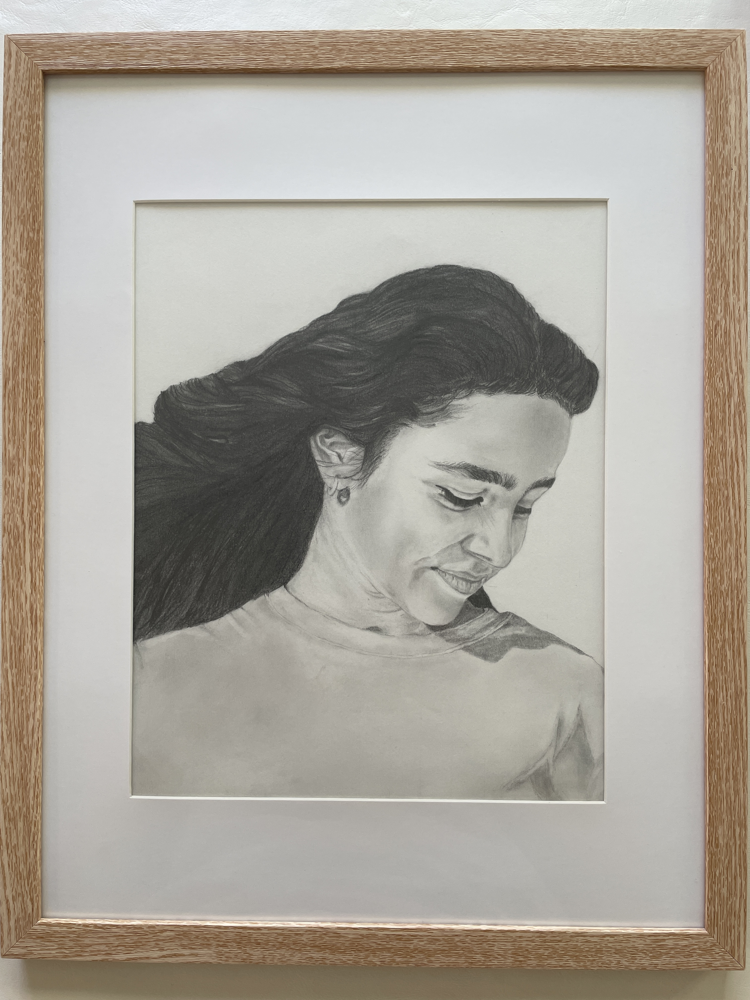

About Me

I am a studio artist who creates portraits and drawings of objects using pencil and charcoal. Through my art, I try to show the emotions and stories of the people I draw, as well as the meaning behind everyday objects. I’m also looking forward to working with oil paints to explore new ways to bring my subjects to life with color and texture.
A Year to Remember
Grid technique, pencil on paper, 2024, completed in 14 hours.
21.59 cm × 27.94 cm (8.5 in × 11 in)
This pencil portrait, titled "A Year to Remember," was created in 2024 using the grid technique. It took 16 hours to complete, capturing my daughter's essence at 13, a year that feels like it's passing too quickly. Through careful attention to detail, I’ve preserved this fleeting moment as a heartfelt gift, marking her growth with love and effort.
Silent Power
Charcoal Drawing on the Paper, 2024

45.7 cm (18 in) × 61 cm (24 in)
This drawing, called "Silent Power," shows a chair with a coat resting on it, creating a calm but strong feeling. The soft shading and shadows make the objects look real and add a quiet sense of strength to the scene.
Sculpture in Pencil
Sculpture Drawing, 2024

21.59 cm × 27.94 cm (8.5 in × 11 in)
This Sculpture Pencil Drawing shows the rough textures and shapes of a broken figure, using soft shading to add depth and detail